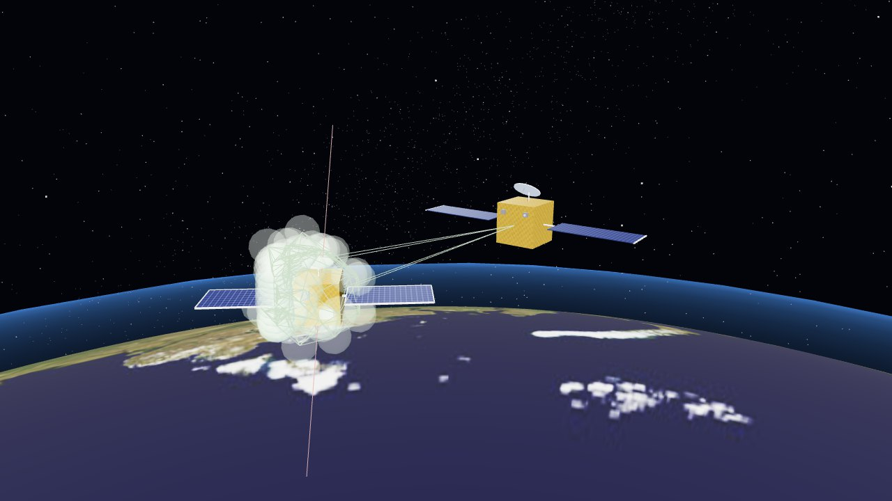
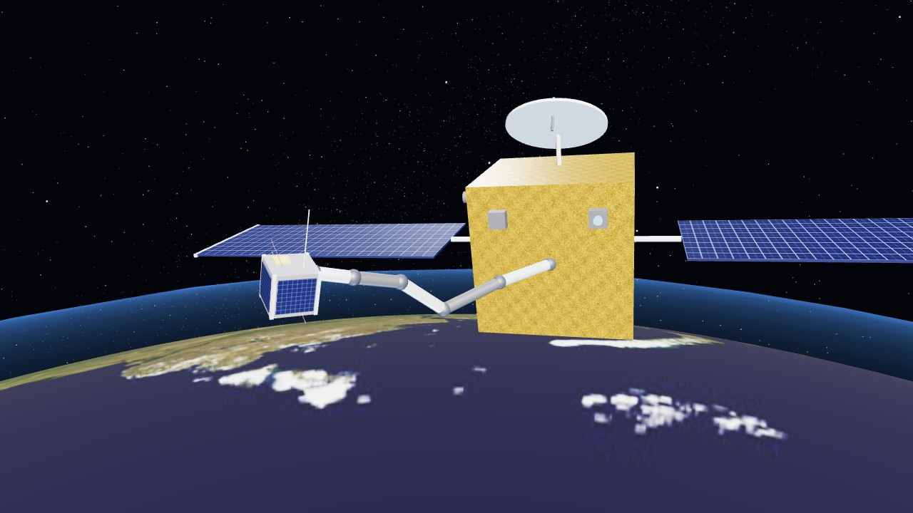
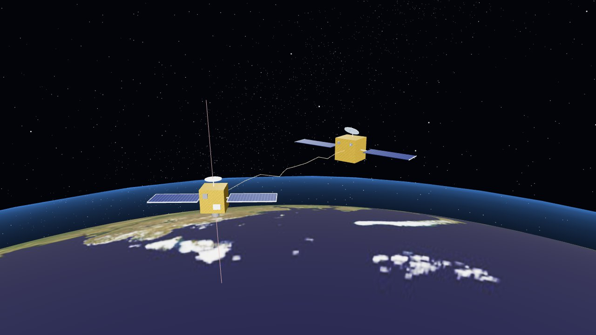

소형10 kg 큐브샛
1위로봇팔
88.2%
회전하는 대상 포획 성공률
- 로봇팔88.2%
- 그물18.9%
- 작살10.2%
로봇팔 · 그물 · 작살의 물리 시뮬레이션 기반 정량 평가
지구 저궤도 파편은 대부분 회전하고 있어, 제거하려면 회전체를 안전하게 붙잡아야 한다. PyBullet 다물체 동역학에 상대 궤도 역학을 더해 세 방식을 같은 조건에서 비교했다. 질량 10 · 500 · 2,000 kg 파편을 0–30 deg/s 로 회전시키고 4,320회 포획을 시도해, 상대 각속도가 1 deg/s 이하로 잦아들어 3 초 이상 유지되면 성공으로 셌다.

그물 포획 리플레이 보기회전하는 대상(2–30 deg/s)에 대한 방식별 포획 성공률이다. 조합마다 450회를 시뮬레이션했다. 곡선은 회전 속도별 성공률이고, 음영은 1위 방식의 95 % 신뢰구간이다.
방식마다 대표 시행 하나를 물리 엔진이 계산한 궤적 그대로 재생한다. 시각화는 결과를 바꾸지 않는다.

포획 성공
포획 성공